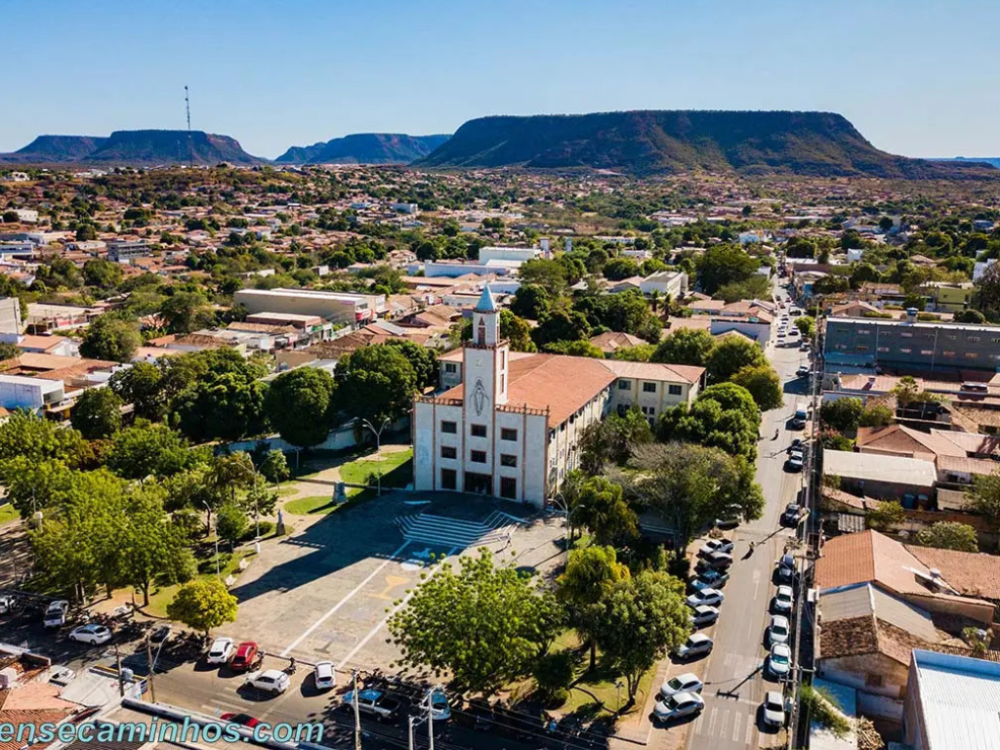

Piauí é um estado localizado na região Nordeste do Brasil, conhecido por sua diversidade natural e importância histórica. Sua capital, Teresina, é a única capital nordestina não localizada no litoral, estando situada entre os rios Parnaíba e Poti. A economia piauiense é baseada na agropecuária, com destaque para a produção de soja, milho e criação de gado, além do crescimento do setor de energia renovável, especialmente solar e eólica. O estado também abriga importantes atrações naturais e arqueológicas, como o Parque Nacional da Serra da Capivara, reconhecido pela UNESCO por seus sítios pré-históricos. Além disso, o Piauí possui forte cultura popular, com festas tradicionais, artesanato e culinária típica do Nordeste brasileiro.
